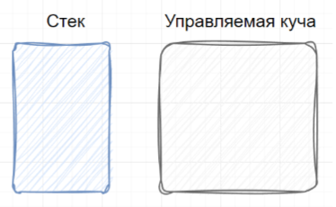
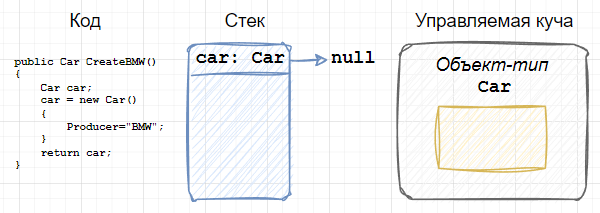
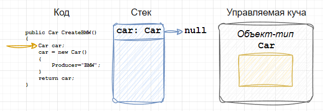
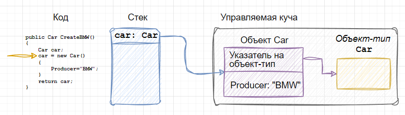
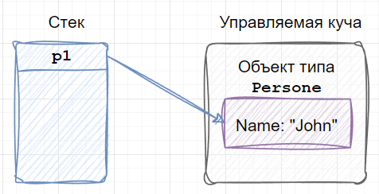
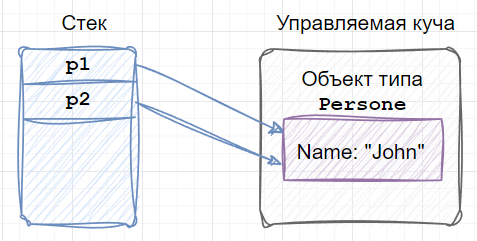
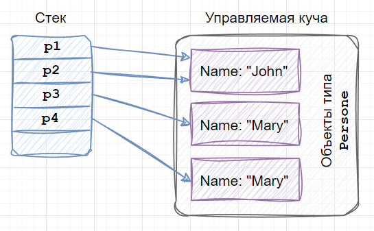

| Тема 5. Ссылочные типы (reference type) в C#. | ||||||||||
| Назад | ||||||||||
Ссылочные типы (reference type) в C#Большая часть всех типов в C# – это ссылочные типы. Это относится как к стандартной библиотеке (BCL), так и к пользовательским типам, которые вы будете создавать в своей работе.
Главная особенность ссылочных типов в том, что память
для их хранения выделяется в куче, удаляются они от туда
(из кучи) сборщиком мусора. Создаются экземпляры таких типов с
помощью оператора Среди ссылочных типов есть три типа, которые являются примитивными. Примитивные типы поддерживает компилятор, благодаря этому можно использовать сокращенный вариант объявления и инициализации их экземпляров. Примитивные ссылочные типы:
Например, полный синтаксис объявления и инициализации строковой переменной будет выглядеть так: System.String str = new System.String("Hello");
Сокращенный вариант: string str = "Hello"; Создание переменной ссылочного типаКак вы уже знаете из предыдущих уроков, у запущенной программы в распоряжении есть два вида памяти: стек и куча (или управляемая куча).  Рассмотрим на примере, как выделяется память для объектов ссылочного типа. Приведенный код вам не нужно будет где-то набирать и запускать, он представлен для демонстрации работы с памятью.
Пусть у нас есть некоторый класс class Car
{public string Producer { get; set; }}
Также есть метод для создания объекта класса public Car CreateBMW()
{
Car car = new Car()
{
Producer="BMW";
}
return car;
}
Предположим, что где-то в нашей программе вызывается метод
В момент, когда мы запускаем нашу программу, операционная
система в оперативной памяти выделяет специальное место, в
которое загружается среда исполнения CLR, там же создается
управляемая куча и поток со своим стеком. Наш код будет
выполняться в рамках созданного потока. Вся эта сложная
конструкция с памятью и потоками называется процесс. Когда
байт-код нашего метода будет преобразовываться в машинный код
JIT-компилятором, будут определены все используемые типы, и в
управляемую кучу загрузятся соответствующие объекты-типы, в
нашем случае – это Получим вот такую картину: 
В
Когда выполнится первая строка в методе 
После того как выполнится вторая строка, в куче будет создан
соответствующий экземпляр типа 
После завершения работы метода стек будет очищен и произойдет
возврат в то место, где был вызван Особенности присваивания значений переменным ссылочного типаПрисваивание значений переменным ссылочного типа отличается от того, как это выполняется для значимых типов. Помимо того, что значения значимых типов, как правило, располагаются в стеке (но могут и в куче, если они являются частью класса), присваивание для них выполняется через создание полной копии объекта, а для переменных ссылочного типа происходит присваивание ссылки на объект. Т.е. копия объекта не создается. Рассмотрим этот аспект более подробно.
После создания переменной её нужно проинициализировать. Это
можно сделать с помощью оператора
Для дальнейшей демонстрации будем пользоваться классом class Person {
public string Name { get; set; } = string.Empty;
}
Варианты создания и инициализации переменных типа // Создание и инициализация с помощью оператора new
Person p1 = new Person() { Name = "John" };
// Создание и инициализация через присвоение значения другой переменной
Person p2 = p1;
Когда мы проинициализировали переменную с помощью оператора 
Переменная  Это приводит к ряду преимуществ, но в то же время имеет и некоторые недостатки. Начнем с преимуществ. Первое — это скорость. На создание объекта в куче тратится время: нужно выделить память и проинициализировать ее. Присваивание одних объектов ссылочных типов другим выполняется очень быстро, так как копируется только значение ссылки на объект. Второе преимущество — это уменьшение объема потребляемой памяти, из-за того, что в куче создается всего один конкретный объект, на который будут ссылаться другие переменные независимо от их количества. Третье — это снижение нагрузки на сборщик мусора: созданные в куче объекты периодически нужно обходить и удалять. Если в ней будет много объектов, то время, которое затратит сборщик мусора на сканирование и удаление, будет довольно большим. Недостатком является то, что изменяя что-то в одном объекте, мы автоматически получаем эти изменения в других. Если это так и задумывалось по дизайну приложения, то всё хорошо. Но довольно часто эти “эффекты” возникают неожиданно. Т.е. разработчик не предусматривал такое поведение. Вернемся к нашему примеру. // Изменим значение свойства Name у p1 p1.Name = "Mary"; // Выведем значение свойства Name у p1 и p2 Console.WriteLine(p1.Name); // Mary Console.WriteLine(p2.Name); // Mary
Если мы изменим значение свойства
Этот эффект возникает везде, где происходит присваивание одной
переменной ссылочного типа другой, даже если это делается не
явно (не напрямую через знак private static void PrintName(Person p)
{
Console.WriteLine($"Name is: {p.Name}");
p.Name = string.Empty;
}
Продолжим нашу основную программу следующими строчками: PrintName(p1); Console.WriteLine(p1.Name);
В свойстве Ниже представлен полный код программы: internal class Program{static void Main(string[] args)
{
// Создание и инициализация с помощью оператора new
Person p1 = new Person() { Name = "John" };
// Создание и инициализация через присвоение значения другой переменной
Person p2 = p1;
// Изменим значение свойства Name у p1
p1.Name = "Mary";
// Выведем значение Name у p1 и p2
Console.WriteLine(p1.Name);// Mary
Console.WriteLine(p2.Name);// Mary
PrintName(p1);
Console.WriteLine(p1.Name);
}
private static void PrintName(Person p)
{
Console.WriteLine($"Name is: {p.Name}");
p.Name = string.Empty;}
}
class Person
{
public string Name { get; set; } = string.Empty;
}
Равенство и тождество объектовПомимо того, что в процессе работы мы присваиваем одни объекты другим явно или неявно (передавая, как аргументы в методы и т. п.), довольно часто нам приходится сравнивать их между собой на предмет “равенства”. Пока возьмем это слово в кавычки, потому что с ним не всё так однозначно. Важно различать понятия равенства и тождества. Как мы с вами знаем из предыдущего степа два разных объекта (с разными именами) могут указывать на одну и ту же область в памяти. В то же время мы можем иметь два разных объекта, которые указывают на разные области в памяти, но содержимое этих областей одинаковое.
Для демонстрации вернемся к классу class Person
{
public string Name { get; set; } = string.Empty;
}
Создадим два объекта, указывающие на одну и ту же область в памяти, и два объекта, которые указывают на разные области в памяти, но у них одинаковое содержимое. // Разные объекты - одна и та же область памяти
Person p1 = new Person() { Name = "John" };
Person p2 = p1;
// Разные объекты, разные области памяти, но одинаковое содержимое
Person p3 = new Person() { Name = "Mary" };
Person p4 = new Person() { Name = "Mary" };

Сравним их между собой на “равенство” (пока это слово до сих пор
в кавычках), для этого воспользуемся оператором Console.WriteLine(p1 == p2); // True Console.WriteLine(p3 == p4); // False
Результат первой строки – Console.WriteLine(p1.Equals(p2)); // True Console.WriteLine(p3.Equals(p4)); // False
Метод
Для того чтобы сравнивать не тождественность
объектов, а их равенство,
необходимо переопределить метод Таким образом, мы с вами выявили, что существует два понятия:
У объектов ссылочного типа |
||||||||||
| Конспект подготовлен Бакулиным А. М. 2012 год. | ||||||||||